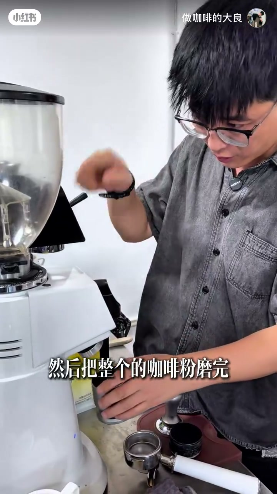
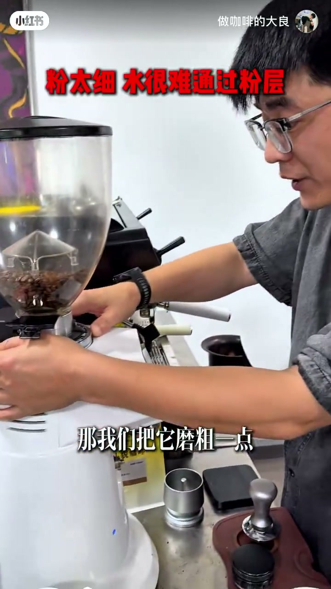
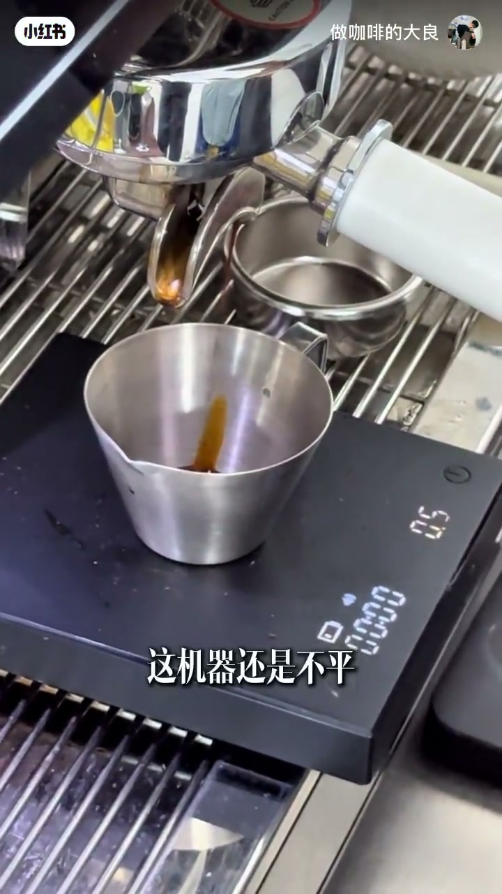
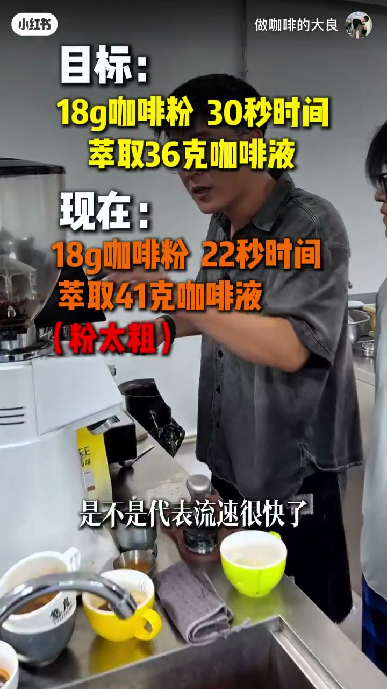
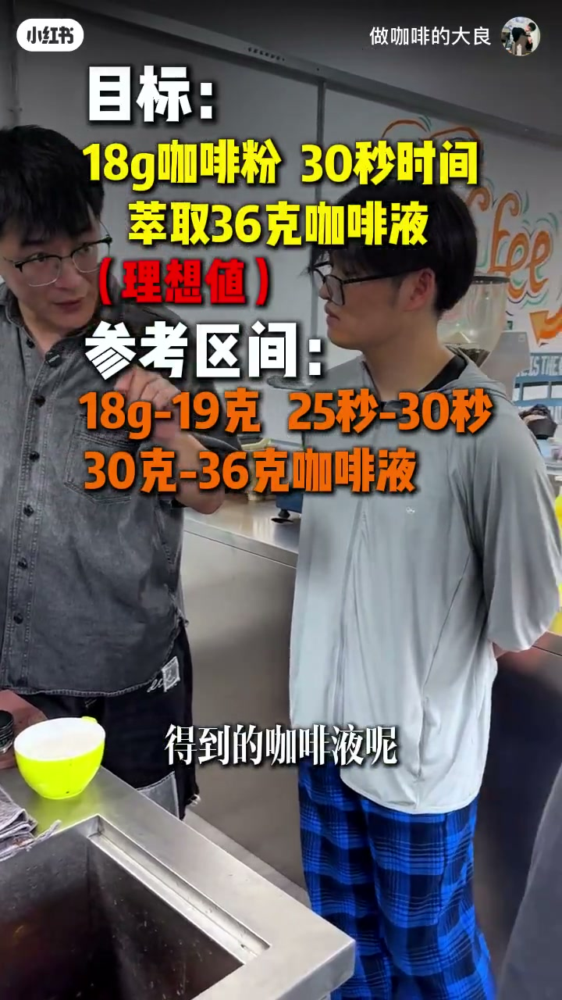
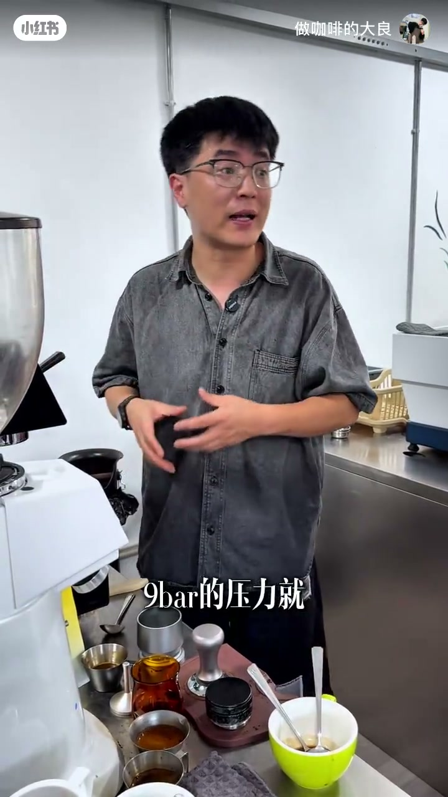

内容要点
网上标准未必直接套用你的机与豆——要先学会底层逻辑。作者把调磨拆成两段：先不管好不好喝，钉死目标「18 克粉、30 秒、萃取 36 克液」，在同一台磨豆机与咖啡机上反复洗磨、称粉、布粉、压粉、放水、上粉，用流速判断偏细还是偏粗；再用「大约每差 5 秒调一格」把刻度从太细（35 秒几乎不出液、43 秒才 38 克）推到偏粗（22 秒已 41 克），落在约 1.7–2.0 的区间，最后一把约 28 秒近目标。随后才谈风味：浓缩喝的是酸苦平衡与回甘，油脂主要是视觉；理想值之外给出家用/门店可接受区间（粉 18–19g、时 25–30s、液 30–36g）。收束：天气气压与换豆才需要重调；咖啡师是豆—磨—机之间的连接器，今天只是皮毛。
知识结构
意式最难；先定 18g/30s/36g，调完再评判好喝。
少倒豆磨净丢弃：清掉刀盘旧粉，意式就是费粉。
填满粉碗先萃：35s 几乎不出液、无油脂 → 太细。
刻度 1.2→1.8；粉/液/时固定后，第四变量是刻度盘。
动作一致；压平压实即可，力道比不过机端约 9 bar。
43s/38g 仍细；差 13s≈3 个 5 秒 → 调到约 2。
E61 冲煮头放水降温；流速变快、油脂变好 → 再调细。
1.7–2.0；28s 近成；理想值 vs 25–30s/30–36g 可接受区间。
酸苦平衡优先；油脂次要；清水演示回甘。
高杯量靠定量；区间内约六七成豆好喝。
换豆/气压变才重调；咖啡师连接豆磨机。
先钉死 18g/30s/36g → 流速慢/无油脂=太细调粗，太快=调细；每约 5 秒一格；再谈酸苦平衡。理想值难天天中，落在可接受区间就算调磨成功。
先定目标，再谈好喝
[00:00 → 00:30]开场声明：约 13 分钟讲清意式咖啡机调磨，小白也能上手。意式是做咖啡里最难的一块——不是网上所有标准、视频都能直接套到你的机与豆上，你要先掌握基础逻辑。
条目一：先给自己定目标。作者要求的目标是 18 克咖啡粉、30 秒时间、萃取 36 克咖啡液。此刻不要管好不好喝：给你一台磨豆机、一台咖啡机，就按这个目标调；调完之后再评判风味，再做微调。
洗磨：看起来浪费，其实是清刀盘
[00:30 → 01:10]实操从磨豆机开始：打开豆仓开关，先少倒一点豆子，把粉磨完。这点粉直接不要——很浪费，但意式就是这么浪费。这一步叫洗磨：你不知道刀盘里之前磨过什么豆、放了多久；只有用新粉把旧粉「洗掉」，后续刻度判断才干净。
洗磨完成后正式倒豆。第一轮可以先不管精确重量：粉碗按 18 克规格，先磨到大概铺平、填满即可，按作者方法走，避免一开始就被称重吓退。

第一把盲萃：太细的现场证据
[01:10 → 02:00]直接上机萃取。细节一：一边流一边不流，往往是机器没放平。关掉时已约 35 秒，只出极少咖啡液，且几乎看不到油脂；流速慢、无油脂，说明研磨太细——水难穿过粉层。
诊断清楚后调粗：刚才约 1.2，先调到 1.6，再定到 1.8。调完还要把机内细粉再洗磨一遍，否则新旧研磨度混在一起，下一把仍会骗人。

四个变量：粉、液、时，最后钉死刻度
[02:00 → 02:50]正式定目标：18 克粉、萃 36 克液、30 秒。粉量、液量、时间都固定后，第四个要固定的变量就是磨豆机刻度盘——先找到能复现的刻度，细节才可谈。
称粉时深烘豆可能偏轻偏重（示意到过 20 克），作者强调：先别管中烘深烘浅烘叙事，按方法把粉量调回约 18 克；操作动作全程保持一致。
布粉、压粉：目的是压平压实，不是比力气
[02:50 → 04:00]布粉器放上铺匀，再用粉锤压粉。常见纠结是「使多大劲」：有人轻轻压、有人按重量压。作者指出：萃取时机器端提供约 9 bar 的稳定压力，换算到粉碗表面相当于约 250 公斤量级的力——你压粉再大力也比不过机端。压粉唯一目的是压平压实，不要在小劲大劲上自我较劲。
怎么确保压平？练。标准动作提示：手柄轴线与手臂成一线，压粉唇垂直下压。上机前冲煮头放水约三秒即可。
第二把仍细：用「每 5 秒一格」粗调
[04:00 → 04:40]机器仍可能不平。结果：43 秒才萃出约 38 克——相对 30 秒目标偏慢，粉仍太细，刀盘间距偏小。这把废掉后继续调粗。
简易换算：43−30=13 秒，大约每差 5 秒调粗一格 → 约 3 格。从约 1.7–1.8 调到 2 再多一丢丢。仍要短时放粉洗磨（约 2–3 秒），再称到约 18.4→拨回 18 克；每一杯都要过秤。布粉、粉锤压粉、再放水。

为何放水、如何上粉，以及第三把偏粗
[04:40 → 06:00]细节：有的机不需要每次放水；这台冲煮头为 E61（ASR 作 161），有利于水温稳定，但久不萃时头部会过热，放一点水是为降温。上粉：意式把手双耳多数约 45° 平着推入、卡住再拧紧。
第三把流速明显变快、前十秒油脂也好看——想要油脂，往往要把粉磨得相对粗一些。两次有效微调后，这台磨×这台机×这豆的区间落在约 1.7–2.0。但 22 秒已萃约 41 克，流速过快（粉太粗）→ 再调细到约 1.9。提醒：这一切不是为「这一杯好喝」，而是为找到刻度——这才叫调磨。意式费粉，所以店里与认真在家做的人常买公斤装。

近成功、理想值与可接受区间
[06:00 → 08:10]再调细再萃：约 28 秒、约 41 克液——差两秒，几乎成了。作者坦白：下一次即使刻度与动作看似不变，参数仍可能漂——拼配豆比例、压粉力度都无法绝对复现。所谓「30 秒萃 18 克粉得 36 克液」是理想值；开店一天可能只有一两把完美中靶，下一把又偏。
因此给出可接受区间：时间约 25–30 秒，粉约 18–19 克，液约 30–36 克——落在区间就算调磨成功，不必迷信每一次都刚好 30/36。

好喝是什么：酸苦平衡，油脂其次
[08:10 → 09:55]下一问：这杯到底好不好喝？表面油脂好看，但喝到的是酸涩与来得慢的微苦。作者主张：喝浓缩主要是喝酸苦平衡，不是追复杂风味叙事；油脂在意式里最不重要，多半是视觉好看。
现场品饮：酸甜苦较平衡；甜往往难直接感知。倒清水漱口后觉得「水甜、有回甘」——不是水加了糖，而是酸苦刺激下降后舌头对甜的相对感知上来。门店目标：酸与苦平衡，并把酸苦的「距离」拉长；极甜豆子很贵，生意要算成本。
门店不靠每杯电子秤，家用仍可用秤学
[09:55 → 11:00]日产两三百甚至四百杯时，不可能每杯都像教学那样反复称重计时。意式机常有定量功能；家里杯量少，仍可按称重方法学，但调一次磨很费粉——所以要学底层逻辑，而不是只抄一个网上刻度。
区间里仍可能遇到不好喝的豆：作者经验约六七成日常豆在这套目标下会过得去；极差拼配与极贵豆是两端例外。对开店能买到的日常豆，这套数值已够用。
何时重调：天气气压、换豆；咖啡师是连接器
[11:00 → 12:27]总结：意式难，早上常要调磨。两类触发：天气变化、换豆子。连续晴天温湿度气压近似，可能四五天甚至一周才调一次；刮风下雨大气压改变时，机内约 9 bar 相对外界的压差变了，萃取就会变，通常要调。
咖啡师最难的不是「把某一杯吹得天花乱坠」，而是任意豆、任意磨、任意机之间承担连接：豆→磨成粉→机端萃取，中间全是人。今天只是底层皮毛；后续还有感官训练与操作一致性。做一两年的人都会这些——关键是先会这套逻辑。
